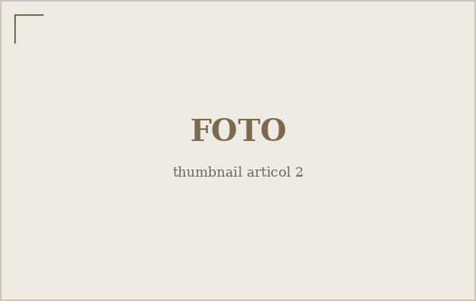

Orașul la prima oră a dimineții
Înainte de șapte, orașul aparține altcuiva. Am ieșit într-o dimineață de ianuarie ca să văd cui.

La șase și un sfert, strada principală e o altă stradă decât cea de la prânz. Vitrinele sunt stinse, semafoarele clipesc galben pentru nimeni, iar singurul zgomot constant e al unei mături care freacă trotuarul undeva, după colț.
Acolo l-am găsit pe domnul Vasile, care mătură aceeași porțiune de stradă de optsprezece ani. Spune că recunoaște trecătorii după pas, nu după față. „Cei grăbiți calcă scurt și tare. Cei care n-au unde să ajungă calcă moale", îmi explică, fără să se oprească din lucru.
Cei care țin orașul în picioare
Brutăria de pe colț lucrează deja de la patru. Lumina galbenă care iese pe ușa din spate e prima lumină caldă de pe toată strada. Înăuntru, mirosul de aluat e atât de dens încât pare că poți să-l atingi cu mâna.
Femeia care scoate tăvile nu vrea să-i spun numele, dar acceptă să-mi povestească. Lucrează de noapte de paisprezece ani și spune că s-a obișnuit cu un program pe care restul orașului îl trăiește invers. „Voi vă treziți când noi terminăm", râde ea.
Cei grăbiți calcă scurt și tare. Cei care n-au unde să ajungă calcă moale.
Lumina care schimbă tot
Pe la șapte fără un sfert, cerul se face dintr-odată albastru-cenușiu, apoi auriu. E momentul în care orașul își schimbă proprietarul: primii navetiști apar la stație, autobuzele încep să geamă, iar liniștea de mai devreme se retrage fără să se plângă.
Am plecat spre casă tocmai când ceilalți porneau spre muncă. M-am gândit, mergând, că orașul are mereu o tură care lucrează ca noi, ceilalți, să-l găsim dimineața gata pregătit — și că rareori ne oprim să le mulțumim celor din tura aceea.